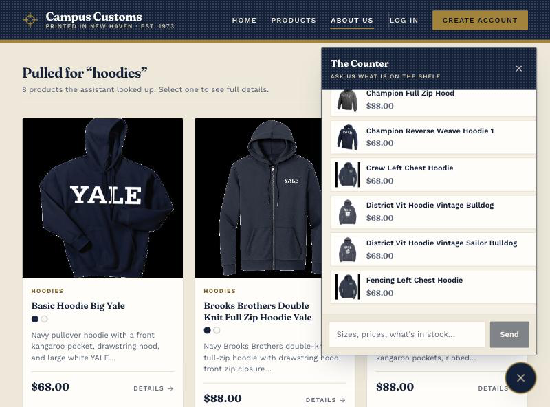
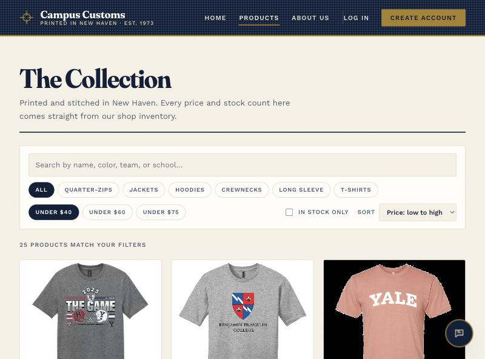

Check 1Chat reports real inventory and price

The assistant was asked how much stock this item has by size and what it costs, and returned the exact per-size quantities, the $72 price and the 52-unit total held in the database. It states plainly that size L is sold out instead of giving a vague “yes, it’s available”.
Every figure checked against the database
| Field | Database | Assistant said |
|---|---|---|
| Price | 72.0 | $72 |
| XS | 15 | 15 |
| S | 2 | 2 — low stock |
| M | 8 | 8 |
| L | 0 | sold out |
| XL | 25 | 25 |
| XXL | 2 | 2 — low stock |
| Total units | 52 | 52 units |
The question said “this” rather than naming the product, so it also shows the agent resolving the item from the page being viewed.
Check 2A category question puts product cards on the page

Asking “what hoodies do you have?” made the agent search the catalogue and the matching products appear on the page as cards, each with an image, name, price and short description, and each opening its own product page. This was asked from the About page, showing results follow the shopper wherever they are.
The API response behind the cards
| Field | Value | Renders as |
|---|---|---|
matched_for | "hoodies" | The heading, “Pulled for ‘hoodies’” |
products[] | 8 cards | The grid on the page |
product_id | basic-hoodie-big-yale | Link to /products/<id> |
reply | “We have 27 hoodies…” | The chat message |
27 is the true catalogue count; the top eight are shown. The cards carry only products the agent actually retrieved through a tool call.
Check 3Usability feature: sorting and price filtering

One of the Problem 9 improvements: the catalogue previously had no way to order results or filter by price. With Under $40 and Price: low to high applied, 102 products narrow to the 25 at or under $40, and both settings are written to the URL so the view can be shared or refreshed.
Verified against the catalogue
| Control | Setting | Result |
|---|---|---|
| Price band | Under $40 | 25 of 102 products, all $32 |
| Sort | Price: low to high | Cheapest tier first |
| URL state | ?sort=price_asc&max_price=40 | Shareable, survives refresh |
| Invalid sort | ?sort=bogus | 422, not a silent fallback |